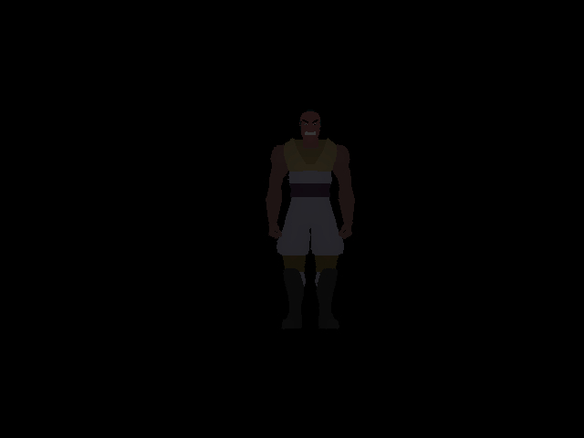

CPE 473 Final Project
Bhargav Brahmbhatt
Description
This project was the combination of a raytracer and a rasterizer. The renders were created by first raytracing a scene from a given file, and then rasterizing a number of objects from separate files into the same scene. For each pixel in question, both the rasterizer and raytracer mapped the closest intersection point to a depth buffer, and if it was the closest point, that object was rendered.
Technologies Developed
In order to integrate these two renderers, the main technology that had to be developed was the rasterizer. Much of the work load was lessened because I had base code for a rasterizer already written; I just had to make the two scenes draw on top of each other and look like they fit together.
A single rasterized model

The same model, translated to the right
Scaled and translated
The original raytraced scene
The same scene, with some lighting changes, and rasterized, diffuse-shaded models. This is also my favorite scene that I created using the combo renderer.
Rasterized objects can be behind raytraced objects!
References
My code, past and present.